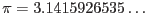
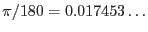
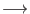
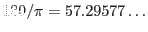
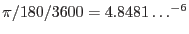
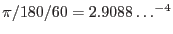

| name | type | value | comment |
| #PI | real |  | |
| #E | real | Euler number | |
| #RAD | real |  | for deg  rad conversion |
| #DEG | real |  | for rad deg conversion |
| #ARCSEC | real |  | 1 arcsec expressed in rad |
| #ARCMIN | real |  | 1 arcmin expressed in rad |
| TRUE | boolean | true | |
| FALSE | boolean | false |